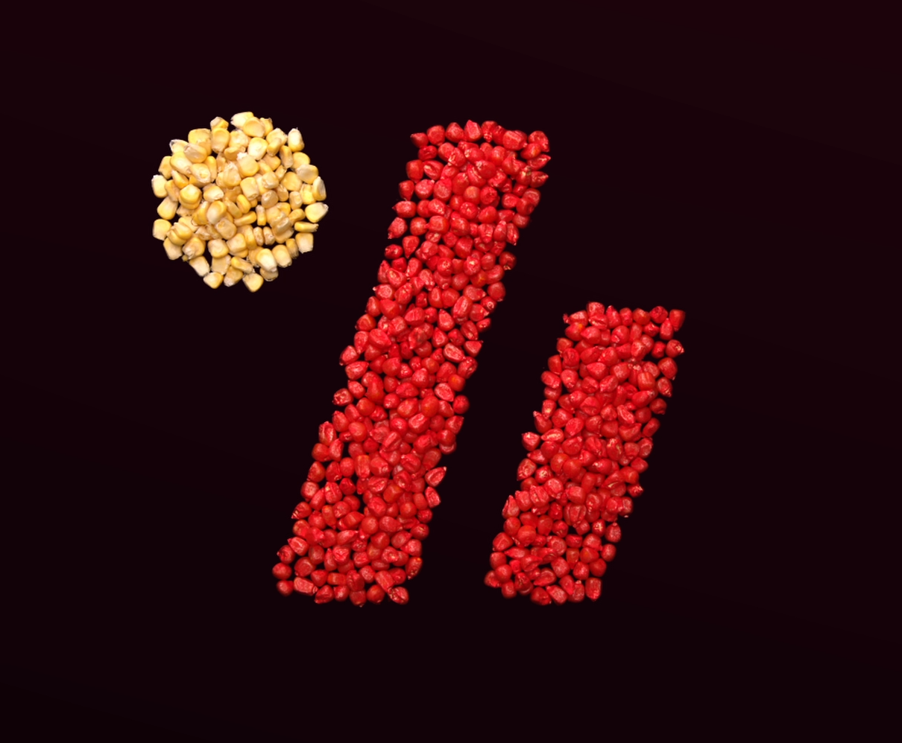
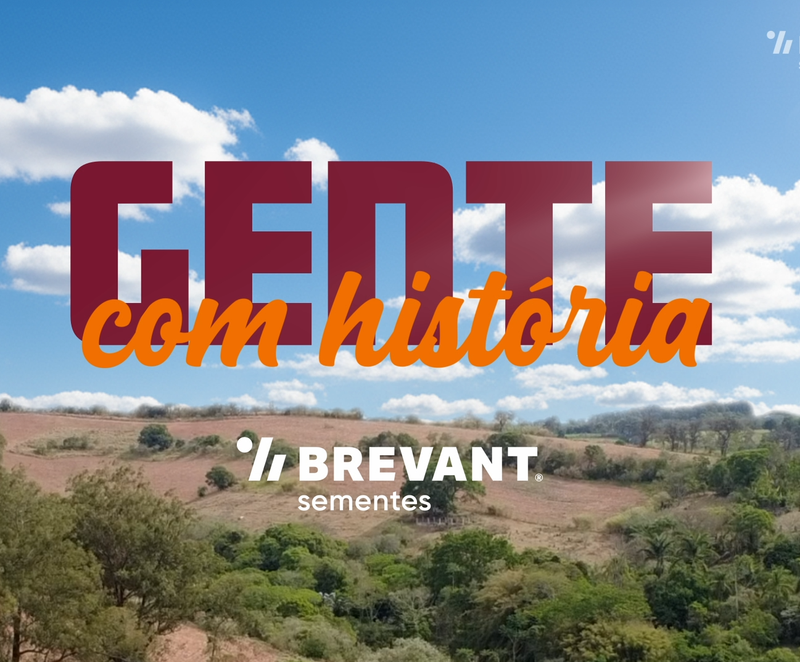
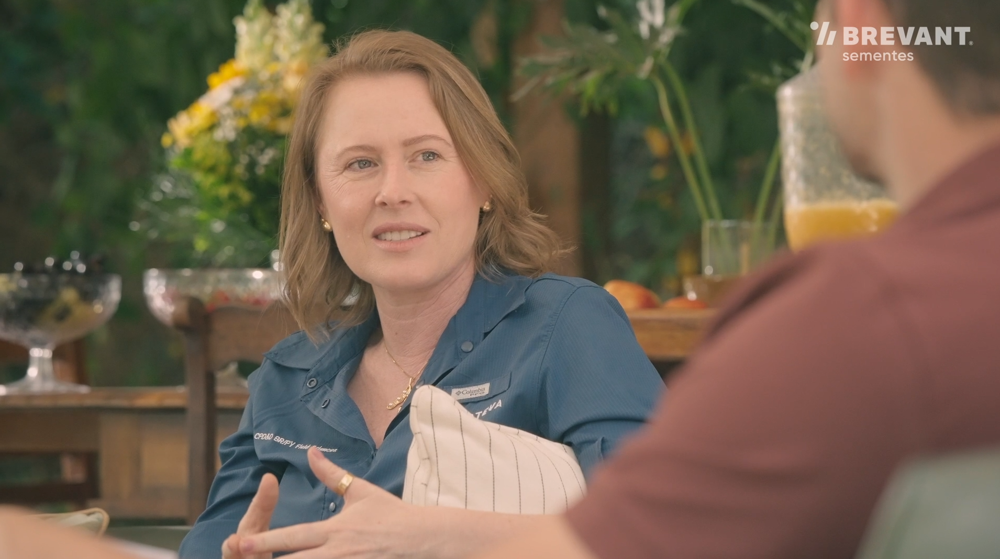
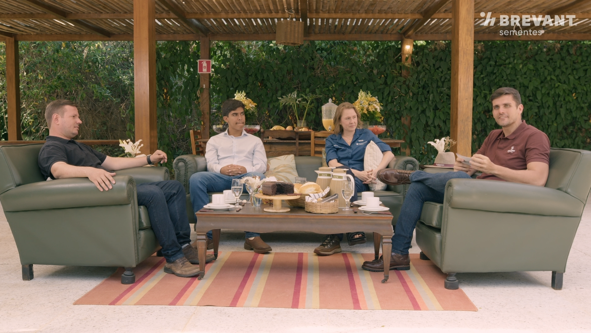
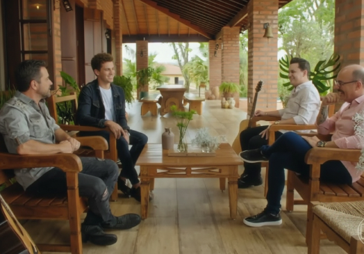
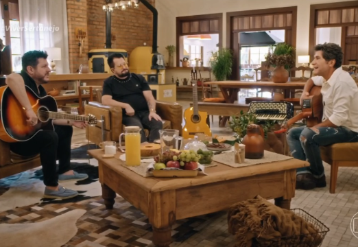
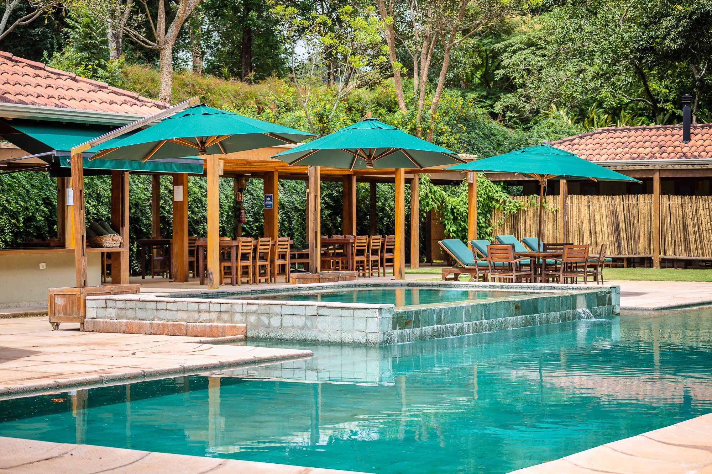
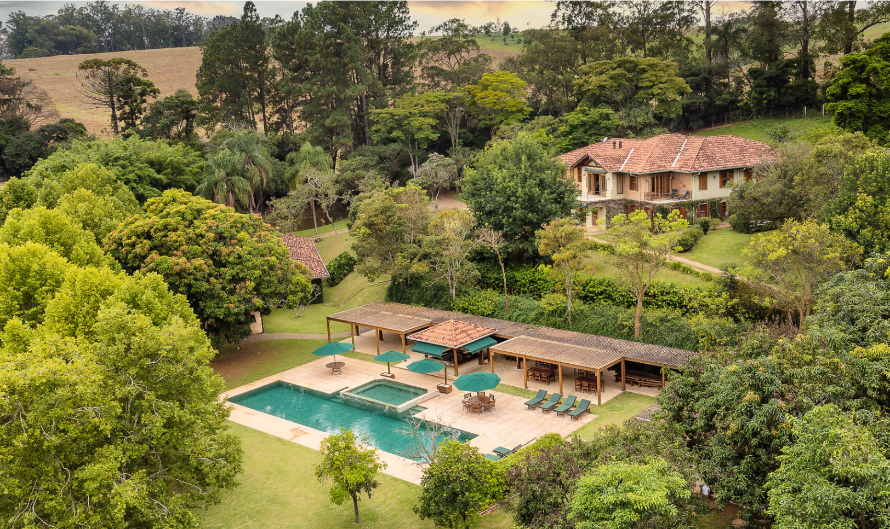
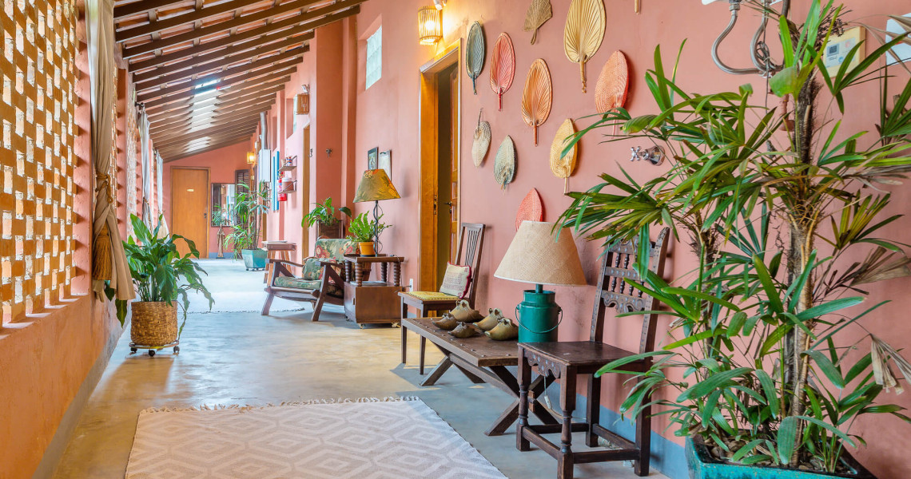

case · brevant sementes
GENTE COM
HISTÓRIA
Como uma campanha criada em poucos dias se tornou um dos conteúdos mais relevantes da marca Brevant no Brasil.
Dia do Engenheiro Agrônomo · Série em 4 episódios
introdução do case
DE UM PRAZO
CRÍTICO A UMA
CAMPANHA LEMBRADA
Em poucos dias, uma resposta criativa a um prazo apertado se transformou numa das campanhas mais lembradas da Brevant Sementes no Brasil — uma homenagem ao Dia do Engenheiro Agrônomo contada a partir de histórias reais do campo.

o contexto
O CONTEXTO DO DESAFIO
O cenário que exigiu uma resposta rápida de comunicação.
Data estratégica
O Dia do Engenheiro Agrônomo se aproximava.
Necessidade de conteúdo
A marca precisava publicar algo relevante para a data.
Falta de alinhamento
As propostas desenvolvidas pela agência vigente não haviam gerado alinhamento interno nem atendido à expectativa do time responsável.
Prazo crítico
Estávamos a apenas dois dias da apresentação da nova proposta — o prazo para construir o conceito e estruturar a apresentação.
Era necessário encontrar rapidamente uma ideia simples, autêntica e capaz de representar o Dia do Engenheiro Agrônomo.
como a oju entrou
O GATILHO DO PROJETO
Como a Oju entrou no processo e estruturou a resposta ao desafio.
Oju é acionada
Diante do prazo crítico e da necessidade de uma nova abordagem, a Oju foi convidada a propor uma alternativa criativa para a campanha.
A data mais importante do ano para a marca
O Dia do Engenheiro Agrônomo é a data mais relevante do calendário da Brevant; a campanha precisava representar com autenticidade a relação da marca com o campo e com os profissionais da agronomia.
48 horas para estruturar a proposta
Esse foi o prazo disponível para desenvolver o conceito, validar a viabilidade e preparar a apresentação da campanha.
A missão era transformar um prazo crítico em uma oportunidade de comunicação relevante para a marca.
antes de definir o formato
A LEITURA ESTRATÉGICA
Antes de definir o formato da campanha, foi necessário compreender o que realmente tornaria a comunicação relevante para essa data.
Insight
Agronomia não é apenas técnica.
É uma história de vida construída no campo.
Para o engenheiro agrônomo, a profissão representa mais do que uma atividade técnica. Ela envolve trajetória, dedicação e relação profunda com o campo.
Direção criativa
Celebrar o Dia do Engenheiro Agrônomo através de histórias reais do campo.
A comunicação deveria valorizar a dimensão humana da agronomia, dando visibilidade às experiências e trajetórias que conectam profissionais ao campo.
A estratégia apontou para uma comunicação baseada em autenticidade, proximidade e histórias reais.
do conceito à tela
CONSTRUÇÃO CRIATIVA
DA CAMPANHA
As decisões criativas que transformaram uma resposta urgente em uma campanha com identidade, atmosfera e força narrativa.


Gente com História
O conceito foi desenvolvido para transformar o Dia do Engenheiro Agrônomo em uma homenagem com densidade humana. Em vez de uma comunicação protocolar, a campanha passou a valorizar trajetórias reais, memória, afeto e vínculo com o campo.


Da referência ao tom da campanha
Partimos de uma referência editorial baseada em conversa, escuta, acolhimento e memória. A inspiração orientou a atmosfera intimista, traduzida com linguagem própria para o universo da agronomia e para a identidade Brevant.



Casa Vilella como decisão de linguagem e produção
A escolha da Casa Vilella, em Itatiba, combinou autenticidade de ambiente com viabilidade operacional para uma produção ágil.
Camada autoral e sofisticação visual
A participação de um diretor convidado trouxe repertório técnico e sensibilidade visual, reforçando o craft da campanha e sua assinatura narrativa.
Como a ideia se sustentava em formato
A campanha combinava conversa, ambiência e direção editorial clara para gerar fluidez, proximidade e relevância emocional.
fechamento do case
RESULTADOS
ATINGIDOS
Uma campanha construída com sensibilidade, agilidade e consistência, e que se tornou um conteúdo relevante dentro do universo da marca.
Gente com História foi desenvolvido com extremo cuidado em cada etapa, da construção do conceito à execução final. O resultado foi uma campanha acolhida com entusiasmo, reconhecida pela sua sensibilidade, pela qualidade da entrega e pela capacidade de traduzir a relação da marca com o campo de forma mais humana e memorável.
O projeto demonstrou força de conteúdo, boa receptividade e potencial de conexão com a audiência, gerando indicadores positivos de visualização e consolidando-se como uma entrega de valor dentro da comunicação da Brevant.
Mais do que cumprir um prazo crítico, o projeto gerou um conteúdo reconhecido, lembrado e valorizado pela marca.
4 episódios
Série completa
Conteúdo estruturado em formato seriado, ampliando permanência e interesse ao longo do tempo.
Alcance positivo
Desempenho
Os conteúdos registraram visualizações e engajamento compatíveis com um projeto de forte apelo humano e institucional.
Repercussão
Reconhecimento interno
A campanha foi reconhecida como uma entrega de valor e boa aderência à comunicação da marca.
Legado
Legado de conteúdo
O projeto se consolidou como uma peça relevante dentro do universo de comunicação da Brevant.
Case desenvolvido pela Oju Filmes para a marca Brevant Sementes — Dia do Engenheiro Agrônomo.
AGENDE UMA
CONVERSA
Quer uma campanha com esse nível de sensibilidade e agilidade pra sua marca? Conta pra gente em 30 minutos.